Projets Print
Votre image pourra se décliner de manières multiples et s’adaptera à des supports très variés selon vos besoins, suivant les tendances et les périodes de l’année. De façon éphémère ou pour perdurer dans le temps. Affiches, logotypes, cartes de visites, dépliants, catalogues, textile, marquages véhicules, signalétiques, réseaux sociaux, goodies…
Logotypes
Votre logo sera l’image de votre marque ou de votre entreprise. Ce signe visuel unique découlera d’une recherche créative approfondie, visant à vous identifier d’un coup d’oeil, et circulera sur tous vos supports de communication.


Webdesign
Le développement de site Web personnalisé, c'est comme demander à un architecte de construire une maison pour vous. Un modèle de site Web ou une conception Web personnalisée dépend de plusieurs facteurs, tels que le type d’entreprise que vous avez et "qui est votre cible et quels sont vos besoins".